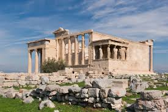

The Erechtheion
Description: The Erechtheion is an ancient Greek temple situated on the Acropolis of Athens. It is renowned for its unique asymmetrical design and the Caryatids, the six elegantly draped female figures that serve as its supporting columns.
History: Built between 421 and 406 BC, the Erechtheion was dedicated to Athena and Poseidon. It was constructed on a site of great religious significance, believed to be where Athena and Poseidon contested for the city's patronage. The temple housed the sacred olive tree of Athena and the legendary statue of the goddess.
Its design reflects the irregular terrain of the Acropolis and accommodates the sacred precincts. The Caryatids of the southern porch are particularly notable for their graceful posture and detailed drapery, representing the high point of classical Greek sculpture.